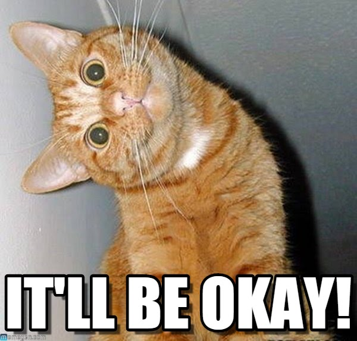

<div ng-controller="Draw">
	<div class="has-error" ng-if="isDrawError">
	  <p class="lead">There has been an error. Please tell Nico that {{drawError}}</p>
	</div>

	<div class="text-center">
		<div style='margin-top: 10%;'></div>
	</div>
	<div class="text-center" style="margin-top: 5%">
  		<button ng-click="draw()"  type="submit" class="btn btn-primary">Select a colleague</button>
  	  </div>
</div>